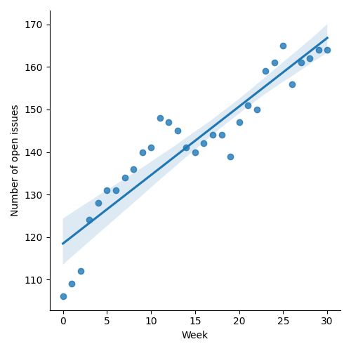
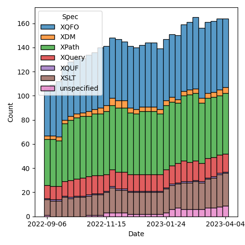
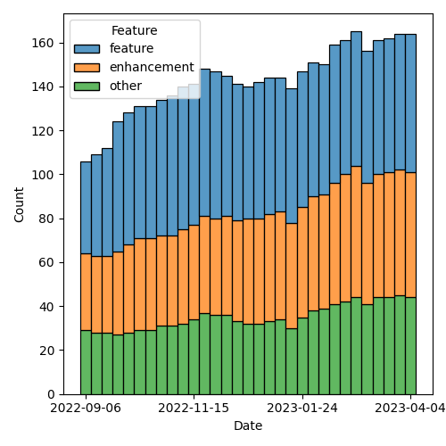

QT4 CG Meeting 030 Minutes 2023-04-11
Table of Contents
Minutes
Approved at meeting 031 on 18 April 2023.
Summary of new and continuing actions [0/14]
[ ]QT4CG-002-10: BTW to coordinate some ideas about improving diversity in the group[ ]QT4CG-016-08: RD to clarify how namespace comparisons are performed.[ ]QT4CG-023-01: NW to review the stylesheets for functions across XPath and XSLT- Stylesheets for formatting functions in F&O and XSLT are out-of-sync
- We’re not handling default values for parameters on the XSLT side
[ ]QT4CG-025-03: MK to revise and expand technical detail in PR #375[ ]QT4CG-026-01: MK to write a summary paper that outlines the decisions we need to make on “value sequences”[ ]QT4CG-027-01: MK to update the text for next-match wrt type() matching[ ]QT4CG-028-01: MK to summarize the options available wrt deep equal and errors[ ]QT4CG-029-01: RD+DN to draft spec prose for the “divide and conquer” approach outlined in issue #399[ ]QT4CG-029-07: NW to open the next discussion of #397 with a demo from DN[ ]QT4CG-030-01: RD to create issues that identify more clearly the various aspects of!,=>,->, and inline function definitions.
1. Administrivia
1.1. Roll call [10/13]
[ ]Anthony (Tony) Bufort (AB)[X]Reece Dunn (RD)[X]Sasha Firsov (SF)[X]Christian Grün (CG)[X]Joel Kalvesmaki (JK) [0:10-][X]Michael Kay (MK)[X]John Lumley (JL)[X]Dimitre Novatchev (DN)[X]Ed Porter (EP)[X]C. M. Sperberg-McQueen (MSM)[ ]Bethan Tovey-Walsh (BTW)[X]Norm Tovey-Walsh (NW). Scribe. Chair.[ ]Mohamed Zergaoui
1.2. Accept the agenda
Proposal: Accept the agenda.
Accepted.
1.2.1. Status so far…

Figure 1: “Burn down” chart on open issues

Figure 2: Open issues by specification

Figure 3: “Burn down” chart on open issues
1.3. Approve minutes of the previous meeting
Proposal: Accept the minutes of the previous meeting.
Accepted.
1.4. Next meeting
The next meeting is scheduled for Tuesday, 18 April 2023.
No regrets heard.
1.5. Review of open action items [0/7]
[ ]QT4CG-002-10: BTW to coordinate some ideas about improving diversity in the group[ ]QT4CG-016-08: RD to clarify how namespace comparisons are performed.[ ]QT4CG-023-01: NW to review the stylesheets for functions across XPath and XSLT- Stylesheets for formatting functions in F&O and XSLT are out-of-sync
- We’re not handling default values for parameters on the XSLT side
[ ]QT4CG-025-03: MK to revise and expand technical detail in PR #375[ ]QT4CG-026-01: MK to write a summary paper that outlines the decisions we need to make on “value sequences”[ ]QT4CG-027-01: MK to update the text for next-match wrt type() matching[ ]QT4CG-028-01: MK to summarize the options available wrt deep equal and errors[ ]QT4CG-029-01: RD+DN to draft spec prose for the “divide and conquer” approach outlined in issue #399[X]QT4CG-029-02: NW to check how Java and JavaScript behave when resolving a relative URI against a base URI that has a fragment identifier.[X]QT4CG-029-03: NW to draft a PR that resolves issue #280[X]QT4CG-029-04: CG to draft a PR that resolves issue #293[X]QT4CG-029-05: NW to draft a PR that resolves issue #315[X]QT4CG-029-06: NW to put a review of the thin arrow operator on the agenda (with links to the relevant issues)[ ]QT4CG-029-07: NW to open the next discussion of #397 with a demo from DN
2. Technical Agenda
2.1. Review of the thin arrow operator
MK reviews the XPath version of the simple arrow operator.
- MK: The “fat arrow” operator is in 3.1 and proved very successful,
but it didn’t do what some people expected: to apply the function on
the left hand side to hand item on the right hand side. The thin
arrow operator is a variant that does that.
- … There was another bit of functionality added; as well as having a function and argument list on the right hand side, you could have an enclosed expression on the RHS. And that’s applied to each item on the left.
- … We have an issue about how arrow works when it applies to an ArrowStaticFunction. Rather than look at that point on its own, we decided to review the operator in context first.
- DN: Are we abandoning the ! operator, and what’s the difference
between
!and->? It looks like it’s the same thing.- … We appear to be overloading our operators with too many things.
- MK: I think that’s an excellent question. Does this add enough functionality to justify the complexity?
Some attempt to recall who originally proposed ->. It’s not clear to
us now.
- CG: But it is an often requested feature from users of BaseX?
- RD: Didn’t this come out of changes to simplifying inline functions?
- … If you can bind a variable to an inline function expression
using
->, then how do you do that in chaining within the arrow operator? So I assume that’s where it came about. - … And once you have
-> {enclosedexpr}, it follows that the other things should be supported because those are what are supported on=>
- … If you can bind a variable to an inline function expression
using
- JL: Is it effectively the question of the default context item in the case of
=>and!? - MK: I think that’s the question of what the exact equivalence should
be. But DN’s point is more about whether we should have this at all.
- … I think a lot of this is based on the fact that
=>didn’t do what some people wanted. - … I think the other argument that came in was to do with
precedence. If you’re trying to chain, like
$x -> f() -> {.+1}, the precedence of the!operator is wrong, you need extra parentheses.
- … I think a lot of this is based on the fact that
- DN: I don’t think this is justified at all
- RD: Can we look at 4.4.2.4 Inline Function Expressions? Here the
->operator has been introduced as an alias forfunctionas a way of simplifying the definition of inline function expressions. If you look through the issue history, you’ll find further proposals. The main thing is the use of the->operator as an inline function.- … E.g,
fn:for-each-pair($A, $B, ->($a, $b) {$a + $b}) - … Now if we go back to the arrow operator…4.20:
- … The
=>variant here takes a dynamic function call as well as a static one. With the->syntax, in addition to those, you can also use the->definition to instead use an inline function. Then the question is, do we just want to use the->here as a thing that works like the=>but instead of a dynamic function call it’s an inline function call, or do we want to extend it out. - … I think that’s the question.
- … E.g,
- CG: I really like the examples that are shown in this section. The
code gets pretty unreadable if you can only use
=>. They start with=>and then when it gets more complicated, they have to switch to FLOWR expressions. - MK: How does it look if you instead use a
=>and feed it into afor each. - CG: That works too, but most folks aren’t that familiar with it.
- SF: The chaining of operations in the
->and=>is what really seems most significant? - MK: Yes, I think that’s the case.
- … A good exmaple is:
(1 to 5) -> xs:double() -> math:sqrt() -> {.+1} => sum()
- … A good exmaple is:
- SF: Data functions do get used to data functions and chaining operators. It’s more about alignment with a generic developer pattern.
- JL: I think we’ve now got a small problem. I like the
->with respect to=>but when we use it as a synonym forfunction, we have a problem. In one case the->is followed by a bracketed set and a braced set and in the other it’s just followed by a braced set or some other function call. I’m not sure that’s the easiest thing! - MK: Are you worried about technical ambiguity?
- JL: No, I’m worried about user confusion.
- DN: I count three different meanings of
->: 1. To replace!, 2. a lexical replacement forfunction, and 3. chaining. Chaining is most convincing, but given the other two, this makes it difficult and hard to understand. Maybe we can use some other symbol for chaining. Or I’ve always argued that we need a function for doing multiple-function composition. - RD: I think it’s useful having different ways to accomplish the same task. Otherwise, you could say everything is equivalent to a FLOWR statement so that’s all we’re going to get. It’s good to support different people and different authoring styles. If someone is more used to the chaining style in function oriented languages, then this syntax would be more natural. I think can be useful in that context.
- CG: I completely agree with RD. I remember when
=>was introduced. I was hesitant if it was really needed because you could do everything with nested functions. But now I see lots of people using it and I think the->would also be useful. - MK: MSM, can you offer any thoughts?
- MSM: I was thinking that I’m kind of torn. I like having things that
are easy to read and understand. CG’s observation that a lot of
people find chaining helpful and idiomatic is useful. That seems
like a reasonably powerful argument in favor. On the other hand, I
have to admit that in my own use of XQuery and XSLT, I tend to stick
with very simple things. I write almost everything as FLOWR
expressions because I find them easy to read and understand and use.
So getting away from them has no particular appeal to me.
- … In the same way, I think I’ve saved a lot of mental energy for other things by never trying to remember the operator priorities. I use parentheses because they save me brain cells.
- … I like the convenience and I think we can have a mneumonic that
=>pass a group of things and->passes a single thing. But the subtlety troubles me. If you have that many operators that are so similar, it seems problematic.
- RD: If we split out the inline function variant by introducing a
different mechanism to specify inline functions. There have been
various iterations on the proposal. Then that would keep the
->operator mirroring the way that the=>operator works. In that sense, it would be overloaded. And then if we allow inline function definitions to put inside both of these, to allow the use case where you want to do something simple. (The use case above.) - MK: I’m not sure exactly what you’re proposing.
- RD: Looking at where
=>and->are defined, I’m proposing to remove arrow followed by enclose expression. (The third bullet in the second list.)- … That would reduce the differences between them. The only
semantic difference is then whether it applies to one item or all
items. We could then change the syntax for the condensed form of inline function expressions.
Let’s say we replaced that with
fun, what we could then do in the third bullet would be apply that to both->and=>to both by allowingfun { expr }. In the=>case, the anonymous argument would be the sequence of all the items contained within it and in the->it would be the single item.
- … That would reduce the differences between them. The only
semantic difference is then whether it applies to one item or all
items. We could then change the syntax for the condensed form of inline function expressions.
Let’s say we replaced that with
- DN: I still have trouble following. I’d like RD to write a proposal. I still think I’d be
a little bit confused in an expression where we have both
->and=>. We don’t have anapplyoperator and we don’t have multiple composition functions. I think we should focus and emphasis our attention on those issues first.- … I’ve always tried to be a user advocate and I’m saying that if
->is accepted, it would really be very painful to try to understand what is going on.
- … I’ve always tried to be a user advocate and I’m saying that if
- MK: I take the view that this is an operator that may be loved by experts who know exactly what it means, but it will be bewildering to users.
- NW: I find the overlapping combination of
!and->and=>is confusing. - MK: I think we should take this as a proposal that’s been made, not as the status quo. We should be looking at it on that basis, rather than as something that is in the spec. If you took that perspective, what would your approach be to accepting it.
- CG: I think we can look at inline function definitions and
->as a chaining operator seperately. That will help. - RD: We’ve got several overlapping things going on here. I can try to create issues to cover them.
ACTION: RD to create issues that identify more clearly the various aspects of !, =>, ->, and inline function definitions.
- MK: Maybe a straw poll?
Some discussion about what the question should be.
Straw poll: Are you: 1. in favor of keeping -> as a chaining operator, opposed to it, or undecided?
Group consent that the poll is understood.
- In favor: 5
- Opposed: 0
- Undecided: 5
Typical results, really. 🙂
- RD: Just checking one code base I’m working on and
!occurs 82 times and=>occurs 10 times. - DN: That’s a kind of user straw poll!
- DN: I have a complementary proposal: I think that we should name whatever graphical representation we choose for this operator, the “apply” operator. We need a better function application operator and we need better functional composition in the language.
2.2. PR #415: Revise parse/build URI functions for UNC names
See PR #415
NW walks through it briefly.
- MSM: What’s a UNC path?
- NW: On Windows, a UCN path identifies a file on another host. See Universal Naming Convention on Wikipedia, for example.
Proposal: Accept this PR?
Accepted.
3. Adjourned
None heard.